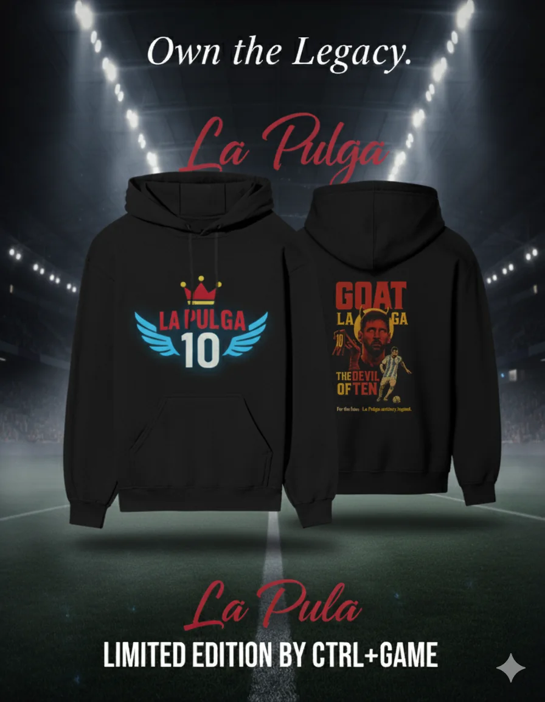
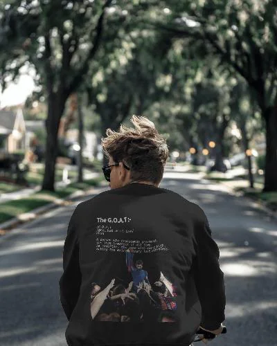
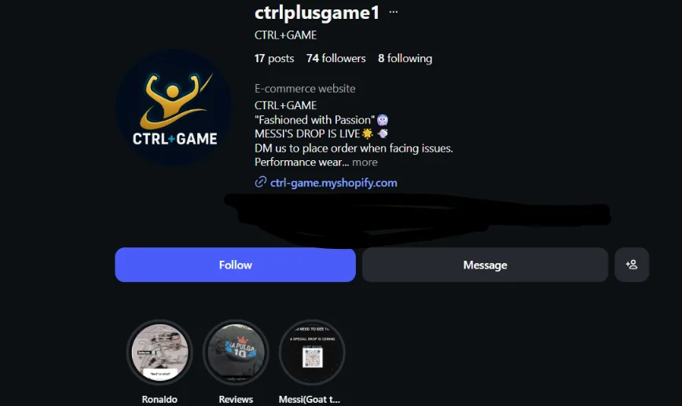
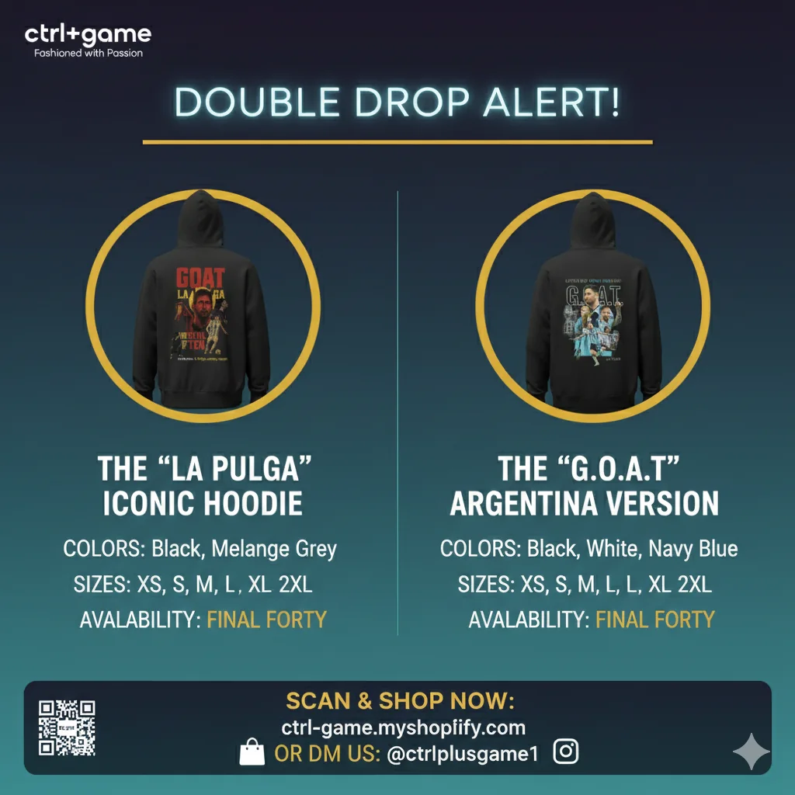
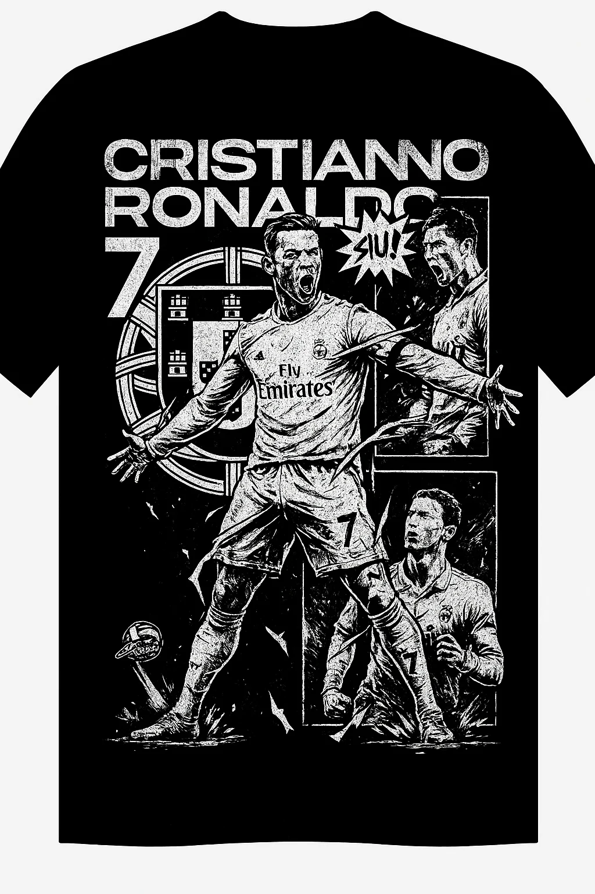
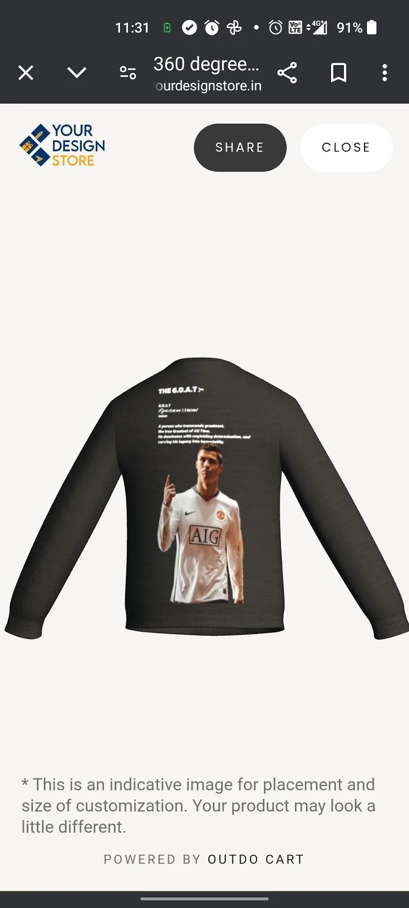

01.01 / COMMERCE
Venture concluded
OCTOBER 2025 — JANUARY 2026
CTRL+GAME
A football-inspired merchandise venture, built around a small product drop and an early e-commerce experiment.
Co-created with a friend. I led most of the hands-on execution — from the idea and brand name, and the majority of the initial funding, to product concepts, Shopify setup and early marketing.
- ROLE
- Co-created with a friend · Led most of the execution
- PRODUCTS
- Two Messi-themed hoodies in the initial drop; a Ronaldo design was listed later.
- CHANNELS
- Shopify, Meta Ads, WhatsApp and local QR-poster promotion.
- OUTCOME
- One sale, received through a personal recommendation. The venture did not establish a repeatable customer-acquisition channel.

CAMPAIGN / PRODUCT DROP ↗THE PROCESS
SCROLL HORIZONTALLY
From concept to storefront

01Product in context
02Brand presence 03Visual identity
04Product-drop creative
05Later product listing
06Product setupThe football-player designs were unofficial fan-inspired concepts. CTRL+GAME was not affiliated with or endorsed by any player or club.